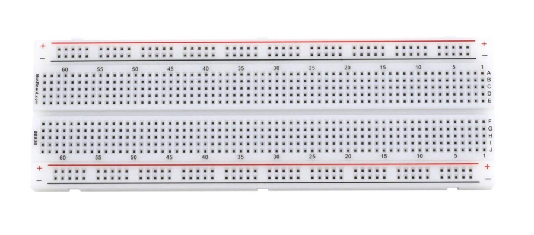
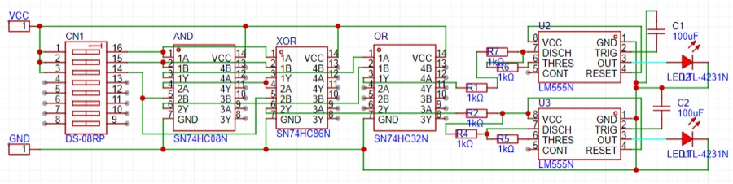
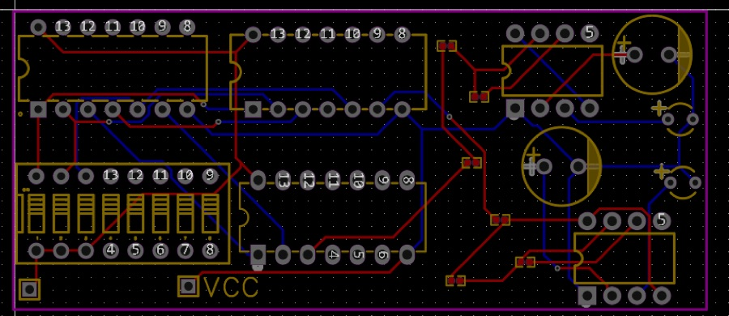
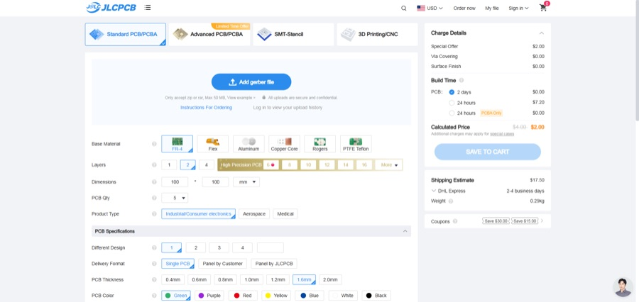
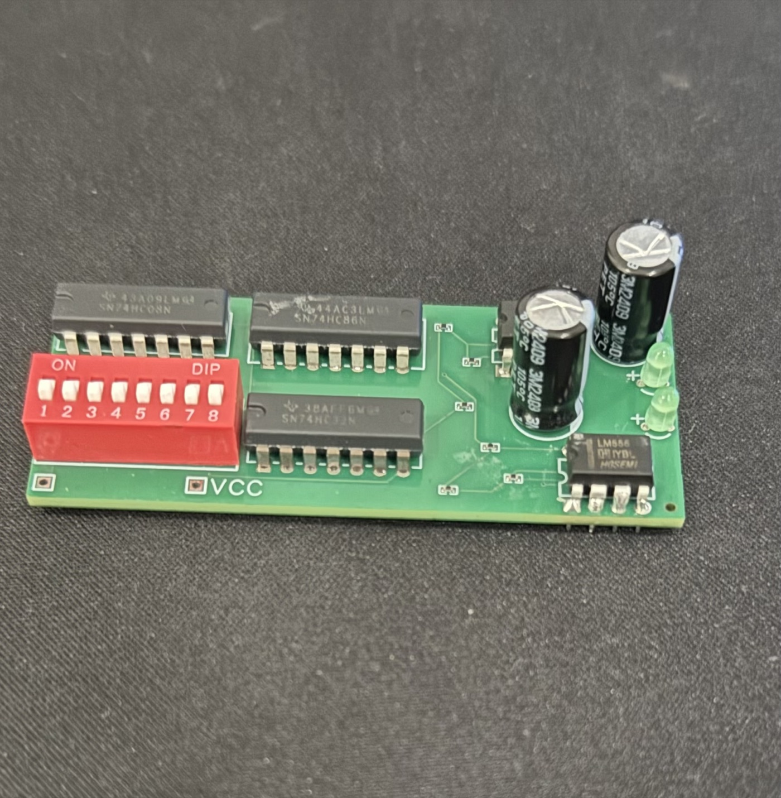

Project · Hardware
Circuit Board
From breadboard to printed circuit board.
- Designed in
- EasyEDA
- Board
- Two layers
- Made by
- JLCPCB, parts assembled
- Paid for by
- Hack Club's $100 OnBoard grant
For a school project I built a half adder that flashes its result on LEDs. It worked on a breadboard, but a breadboard is fragile and messy. I wanted something permanent, so I designed a real circuit board for it.
-

The breadboard
The circuit already worked on a breadboard. I could have soldered it onto perfboard, but with this many parts it would have been slow and messy. A custom board would be cleaner, and I wanted to learn how to make one.
-

The schematic
My teacher (Mr. Andrade) suggested EasyEDA. After a short tutorial I found every part I needed in its library and placed them in the schematic. EasyEDA shows each chip's pin diagram, so wiring came down to drawing lines between pins. Then I checked every connection against the datasheets and the breadboard.
-

The layout
Next I placed the parts on the board, as tight as I could while keeping it logical, and let the auto-router draw the copper traces. On a two-layer board traces can only cross by switching sides, so a badly placed part makes routing fail. I moved a few parts and redrew some traces by hand.
-

The order
I ordered from JLCPCB, which can also solder the parts on, so I didn't have to place every chip myself. Hack Club's OnBoard grant gives students $100 toward their first board, and it covered the order. I uploaded the files from EasyEDA, checked out and waited for the mail.
-

The finished board
When the boards arrived, all that was left was soldering the power connection. They worked, and they looked a lot better than the breadboard.